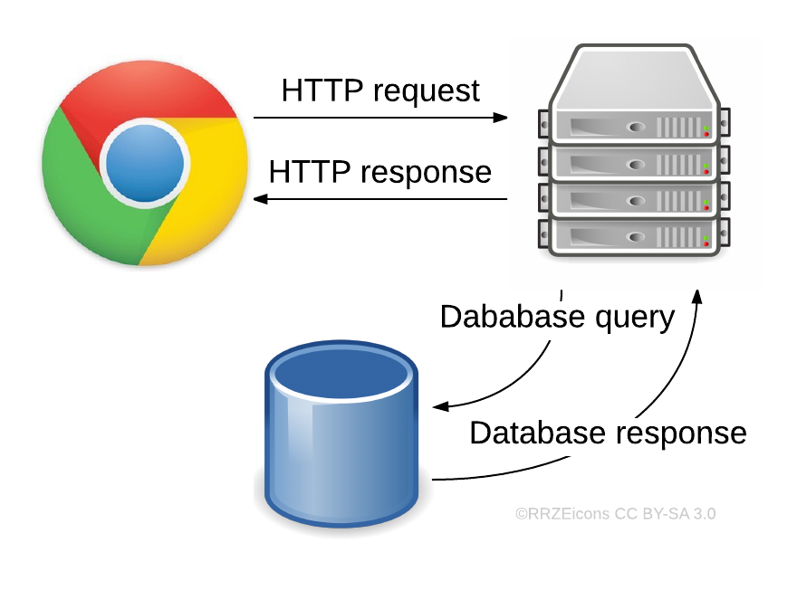
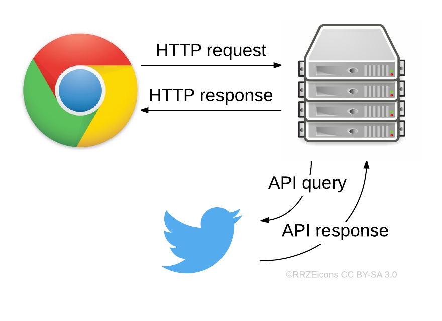
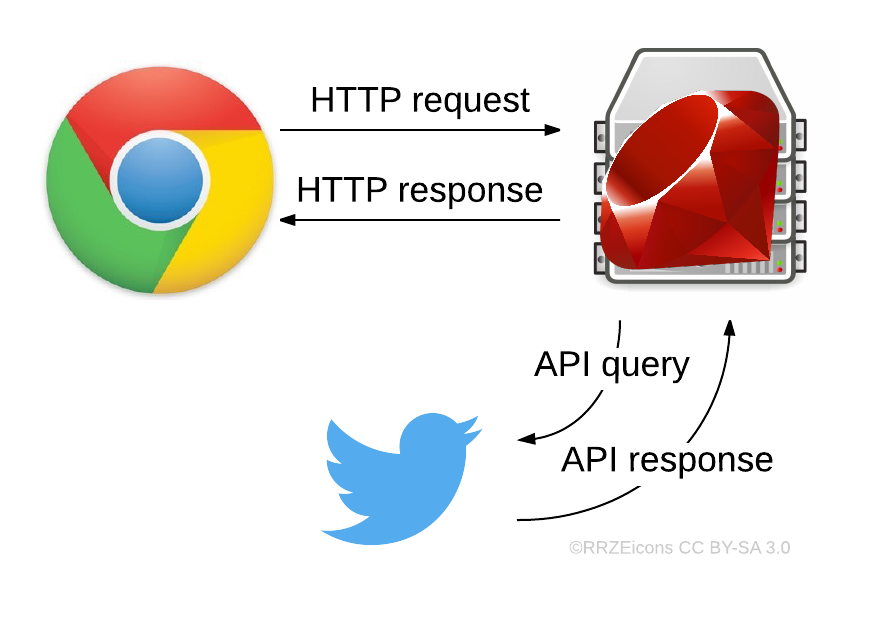
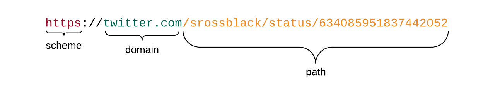
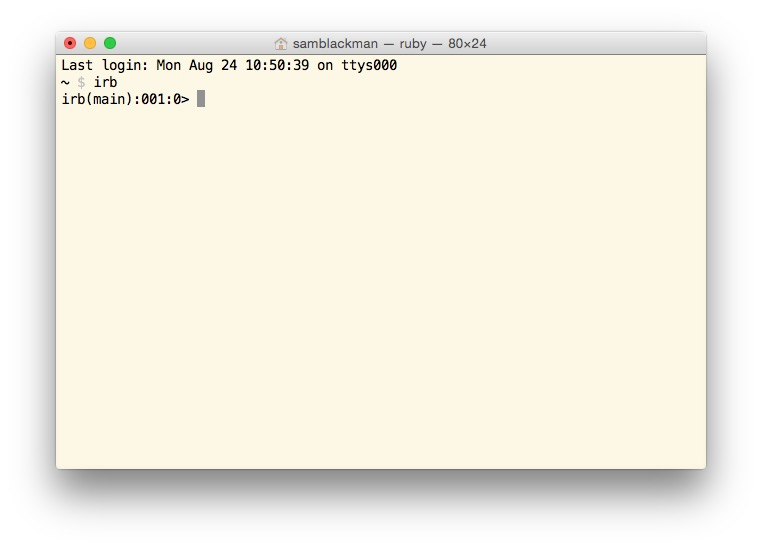

Ruby for Beginners
Building a Web Server
Brought to you by Dev Bootcamp
Hi everyone!
Some "rules" for today:
- We are here to support your learning!
- Ask every single question you have.
- Take advantage of the amazing person next to you!
- If you want to do it, do it. Have fun with this.
Welcome!
Let's get to know each other!
- What's your name, and who are you?
- What do you want to get out of this session?
- What's something quirky about you?
Things to download
Outline
- Tools for learning and writing Ruby
- The role Ruby plays in the World Wide Web
- The simplest of servers with Sinatra
- Breakout - build a simple server!
- Different ways to represent data in Ruby
- Loops, conditionals and methods
- Common Ruby core library methods
- Breakout - write an algorithm!
- Interacting with Twitter using Ruby
- Serving tweets to your website
- Posting tweets from your website
- Breakout - implement your algorithm!
Ruby tools
- A command line interface (Terminal / Shell)
- The Ruby interpreter
- A text editor (Sublime Text)
- A web browser (Chrome)
- Ruby gems
- Research techniques
Research techniques
Google search and autocomplete will quickly become your best friend

Research techniques
Your ultimate goal is a super fast feedback loop.
Research techniques
Scan through the Google search results and work out which look most relevant to your issue.

Research techniques
Cmd+Click (Mac) or Ctrl+Click a link to open it in a new tab. Open what you think are the three most promising results.

Research techniques
In my experience, I've found the following resources to be particularly helpful:
- Stack Overflow
- ruby-doc.org ("The Ruby Docs")
- Guides and blog posts
Research techniques
A quick note on Stack Overflow...
Always remember that the section right at the top of the page is the question, not the answer!

Our goal
Our goal today is to build a web server that interacts with the Twitter API and sends HTML pages back to the browser.
Ruby's role
To understand Ruby's role on the Web, we need to understand the Web.
Request / Response
Specifically today
Ruby's role
Sinatra is a framework written in Ruby that allows us to build a server that, upon receiving a request from a browser, will respond with a page of HTML.
Installing Sinatra
If you haven't already done so, go to your terminal or command line and type:
gem install sinatra
when that's done you might as well install the twitter gem, too, since we'll be using it later:
gem install twitter
Routes
When your server receives a request from a browser, it needs to know what action to perform based on that request. This is called routing.
Routes
The text and slashes after the domain name in a URL is known as the path. Your server looks at the path to determine where to route a request.
Routes
If your Sinatra server received a request like this:
http://localhost:9393/hello
...it would look for a route like this:
get '/hello' do
end
Routes
Likewise, if your Sinatra server received a request like this:
http://localhost:9393/this/is/a/really/long/path
...it would look for a route like this:
get '/this/is/a/really/long/path' do
end
Response
Once your server has matched a path, it runs whatever Ruby code is between the `do` and the `end`. It will respond to the browser with the last line in the route.
Response
You can respond with a simple string:
get '/hello' do
"Why hello there, friendly Web traveler!"
end
Response
...or with an HTML file:
get '/hello' do
erb :hello
end
Sinatra will look in your "views" folder for an HTML file called "hello.erb" and send it back to the browser to display.
Running your server
Once you have a route or two set up, you need to run your server so it listens for requests.
Running your server
In your terminal, navigate to your server file's location and type "ruby" followed by the filename, eg:
ruby server.rb
Your server will now be waiting for requests. You can press Ctrl+C to stop your server.
Make a request
Head to your browser and type the address you saw in your terminal, plus one of your routes, for example:
http://localhost:4567/hello
Your server will respond to your request!
omg let's build
bit.ly/dbc-sinatra-introChallenge
- Create three GET routes in the server.rb file
- In one of the routes, respond with a simple string
- In another route, respond with hello.erb (already there)
- In the final route, respond with your own HTML file
Coding Basics
(through a Ruby lens)
A bunch of jargon:
- "variable"
- "string"
- "integer"
- "float"
- "boolean"
- "return-value"
- "array"
- "hash"
What does it all mean!?
Variables
A variable is a way of naming things so we have a reference to them later.
Variables
Think of variables as a label we can write on and apply to different things.

Variables
Let's come back to variables once we learn about a few different data types we can label.
Strings
A string is simply a sequence of characters. Here are some examples of strings in Ruby:
"This is a string."
"123456789abcde"
"!@#$%^&*()"
""
'A string can also be in single quotes'
Strings
Strings are one of the most common data types in every programming language. Get used to seeing, using and manipulating strings!
Symbols
Symbols in Ruby are similar to strings. They are also a collection of characters. This is what Ruby symbols look like:
:a_symbol
:another_symbol
:name
Symbols
Whereas strings are intended to be manipulated (for example, reversed), symbols can never change. Symbols are intended to be identifiers for things. We will see this when we talk about hashes.
Integers
Integers are another very common data type that you will see in every language. This is what they look like in Ruby:
42
100
10000
-256
Integers are numbers without fractional components.
Floats
A float, or "floating point", is how computers represent numbers with fractional components. In Ruby, floats look like this:
1.1
3.141592653589793
5.5
99.999
−128.6
Numeric methods
You can perform simple arithmetic on integers and floats using:
| Addition | + |
| Subtraction | - |
| Multiplication | * |
| Division | / |
| Modulus | % |
Numeric methods
You can also perform simple comparison operations on numbers using:
| Equality | == |
| Inequality | != |
| Greater than | > |
| Greater than or equal to | >= |
| Less than | < |
| Less than or equal to | <= |
Try it yourself!
Open up IRB by typing `irb` in your terminal. You can also go to repl.it for an online version.
Pop quiz!
- What does the modulus operator do?
- What happens if you multiply a string by a number?
- What happens if you multiply a number by a string?
- Can you add a number to a string?
- Do comparison operators work with strings?
Return values
Every time you press enter in IRB, you see the return value of expression you evaluated.
Return values
What data type did Ruby return when you used a comparison operator?
Comparison operators will always return a
Boolean
true or false
Booleans
Note that in Ruby:
- the value `nil` counts as false
- everything else counts as true
This can be useful when we look at conditionals later.
Back to variables
Now we know how to create a few data types, let's save them for later in some variables.
Variables
There are different types of variables in Ruby:
- local variables
- instance variables
- class variables
- global variables
Variables
The difference between variable types relates to which parts of your code can access those variables. This is known as scope.
Variables
Today we'll use local variables and instance variables. Let's look at how to declare these variables in Ruby.
Variable syntax
The syntax for declaring variables in Ruby is like this:
# this is a local variable
magic_number = 42
# this is an instance variable
@instance_variable = "My first instance variable!"
A note on naming
Naming variables in snake_case is a Ruby convention.
Storing things
You can directly assign values to variables...
seen_it = "...like we've already seen"
...or store return values of expressions in variables
num = 3
other_num = 4
multiplier = 6
answer_to_the_ultimate_question = (num + other_num) * multiplier
Data structures
Let's look at two more data structures:
- Arrays
- Hashes
Data structures
For the following data structures, we are going to learn how to create, or instantiate, them and then learn the following operations:
- Accessing values
- Updating values
- Inserting values
- Removing values
Arrays
Just like a variable holds a single value, an array holds a collection of values.
Arrays
Think of an array as a bunch of buckets, each of which stores a value.

Arrays
If we were to put the first eight characters of the alphabet into these buckets, it would look like this in Ruby:
letters = ["a","b","c","d","e","f","g","h"]
An array of the characters "a" through "h" is now stored in the local variable `letters`. This is an array of strings.
Arrays
Accessing values
Every element in an array is stored in a specific position known as an index. Arrays are indexed starting at 0 and incrementing by 1 for each position.
| 0 | 1 | 2 | 3 | 4 | 5 | 6 | 7 |
| "a" | "b" | "c" | "d" | "e" | "f" | "g" | "h" |
Arrays
You refer to each element by its index.

Arrays
Accessing values
letters = ["a","b","c","d","e","f","g","h"]
letters[0] # returns "a"
letters[7] # returns "h"
Arrays
Updating values
letters = ["a","b","c","d","e","f","g","h"]
# if we want to change "a" and "b":
letters[0] = "apples"
letters[1] = "bananas"
# letters now contains:
["apples","bananas","c","d","e","f","g","h"]
Arrays
Inserting values
letters = ["a","b","c","d"]
letters << "elephant" # alternatively letters.push("elephant")
# letters now contains:
["a","b","c","d","elephant"]
This is technically the push method, but when written as above, most people would say they are shoveling a string into the letters array. The << operator is known as the shovel operator.
Arrays
Inserting values
letters = ["a","b","c","d", "elephant"]
letters.unshift("zebra")
# letters now contains:
["zebra","a","b","c","d", "elephant"]
The unshift method adds an element to the start of an array.
Arrays
Removing values
letters = ["a","b","c","d"]
char = letters.pop
# letters now contains:
["a","b","c"]
# and the local variable `char` contains:
"d"
The pop method removes an element from the end of an array.
Arrays
Removing values
letters = ["a","b","c","d"]
char = letters.shift
# letters now contains:
["b","c","d"]
# and `char` contains:
"a"
The shift method removes an element from the start of an array.
A quick note on Methods
Methods
Everything in Ruby has some built in behavior called methods. We've already seen a few array methods with push, pop, shift and unshift.
Method syntax
letters = ["a","b","c"]
letters.push("d")
# --------------------------
letters # the array that we're calling our method on
. # the dot to signify we're about to call a method
push # the name of the method
("d") # the actual calling of the method with a string argument
We call a method with a dot, followed by the method name, followed by a set of parentheses. Sometimes we put other data inside the parens, known as arguments; other times methods don't require arguments.
Method syntax
In Ruby, when a method takes no arguments, we can call that method without parentheses.
letters = ["a","b","c","d"]
letters.pop
Hashes
Hashes in Ruby are similar to arrays in that they contain a collection of values.
However, unlike arrays which are ordered by index, the values in hashes are stored in keys that you name yourself.
Hashes
In our metaphor we give each bucket a name. This is the key. The item inside the bucket is its value. So, a Ruby hash is a collection of key value pairs.

Hashes
Let's instantiate a hash in Ruby:
person = {:name => "Sam", :age => 28, :sex => "male"}
This hash contains three key value pairs and the hash is stored in the local variable `person`.
Hashes
In Ruby, you can use any data type for keys in a hash, but it is common to use symbols.
person = {:name => "Sam", :age => 28, :sex => "male"}
The arrows separating the keys and values are colloquially known as hash rockets.
Hashes
Because it is so common to use symbols as keys in hashes, there is a shortcut to create these hashes without using the hash rocket notation:
person = {name: "Sam", age: 28, sex: "male"}
This works in Ruby 1.9 and higher.
Hashes
Accessing values
person = {name: "Sam", age: 28, sex: "male"}
person[:name] # returns "Sam"
Hashes
Updating values
person = {name: "Sam", age: 28, sex: "male"}
person[:age] = 29
# person now contains:
{name: "Sam", age: 29, sex: "male"}
person[:age] # returns 29
Hashes
Inserting values
person = {name: "Sam", age: 28, sex: "male"}
person[:gender] = "cis male"
# person now contains
{name: "Sam", age: 28, sex: "male", gender: "cis male"}
Hashes
Removing values
person = {name: "Sam", age: 28, sex: "male", gender: "cis male"}
person.delete(:sex) # returns "male"
# person now contains:
{name: "Sam", age: 28, gender: "cis male"}
person[:sex] # returns nil
The delete method removes a key value pair from a hash and returns the value.
Note that if you try to access a key that doesn't exist, the hash will return nil.
Other names
These things we call hashes in Ruby can be called dictionaries, hash tables, or maps in other languages.
The closest equivalent to a Ruby hash in JavaScript is a JavaScript object.
"Objects" in Ruby are more complex and we won't discuss them in this workshop.
Break & Challenge
Optional Challenge
Inside a local variable named `dogs`, model the following things with arrays, hashes, symbols and strings:
- Three dogs, each with:
- a name
- a breed
- a couple of tricks it knows
Take 10 minutes to stretch, get some food and go to the restroom.
Up next
- Loops / enumerable methods
- Conditionals
- Defining methods
Loops
Doing certain things over and over and over and over is a very common thing when coding
Loops
We will look at the syntax for three Ruby loops:
- times
- each
- map
Loops
This is the syntax for a times loop:
10.times do
puts "Hello!"
end
The part from the `do` to the `end` is called a block.
Loops
If you want a counter with a times loop, you name a parameter inside the block like this:
10.times do |counter|
puts "Here we go. Let's count: #{counter}"
end
Aside:
String interpolation
If you want to insert Ruby code or the value of a variable inside a string, you do so with string interpolation.
String interpolation
This:
dog_speak = "woof!"
puts "Dogs say #{dog_speak}"
is a shortcut for this:
dog_speak = "woof!"
puts "Dogs say " + dog_speak
Loops
One of the most common operations in Ruby is iterating over a collection. Here is how to iterate over an array using the each method:
greetings = ["hello", "kia ora", "aloha", "talofa", "malo"]
greetings.each do |word|
puts "You can say hi by saying #{word}!"
end
Loops
A common pattern in Ruby is to transform every element in an array to something else. For example, if we to turn every greeting into all caps, we could do this:
greetings = ["hello", "kia ora", "aloha", "talofa", "malo"]
shouty_greetings = []
greetings.each do |word|
shouty_greetings << word.upcase
end
# shouty_greetings now contains:
["HELLO", "KIA ORA", "ALOHA", "TALOFA", "MALO"]
# and greetings still contains:
["hello", "kia ora", "aloha", "talofa", "malo"]
Loops
In fact, this pattern of transforming every element of an array is so common, it has its own method called map.
greetings = ["hello", "kia ora", "aloha", "talofa", "malo"]
shouty_greetings = greetings.map do |word|
word.upcase
end
# shouty_greetings contains:
["HELLO", "KIA ORA", "ALOHA", "TALOFA", "MALO"]
# and greetings contains:
["hello", "kia ora", "aloha", "talofa", "malo"]
Block style
Remember the bit between the `do` and `end` is a block? If a block only has one line in it, you can write it like:
greetings.each { |word| puts "You can say hi by saying #{word}!" }
# compare curly braces above to do/end below:
greetings.each do |word|
puts "You can say hi by saying #{word}!"
end
The code above and below the comment are the same. Curly braces and do/end are both ways to write blocks.
Block style
Here's an elegant version of our map method:
greetings = ["hello", "kia ora", "aloha", "talofa", "malo"]
shouty_greetings = greetings.map { |word| word.upcase }
Conditionals
Sometimes you want your code to do different things depending on different inputs. This is called control flow.
Conditionals
Maybe you need to authenticate an administrator based on a password:
admin_password = "ilikepies"
admin_logged_in = false
puts "Please enter your password for admin access..."
input = gets.chomp
if input == admin_password
admin_logged_in = true
puts "Welcome to the system, administrator."
else
puts "Sorry, that is not the password."
end
Conditionals
Perhaps we only want to make greetings starting with "K" all caps and reverse everything else...
greetings = ["hello", "kia ora", "aloha", "talofa", "malo"]
wacky_greetings = []
greetings.each do |word|
if word[0].downcase == "k"
wacky_greetings << word.upcase
else
wacky_greetings << word.reverse
end
end
# wacky_greetings now contains:
["olleh", "KIA ORA", "ahola", "afolat", "olam"]
Methods
What is a method?
A method is a selection of code that you can save and run later, potentially multiple times.
Method syntax
We define a method like this:
def create_greeting(name)
return "Welcome to my website, #{name}!"
end
This method takes a string as input and returns a different string as output.
Calling a method
We call a method by typing its name, followed by parentheses if it takes arguments.
def create_greeting(name)
return "Welcome to my website, #{name}!"
end
create_greeting("Sam") # returns "Welcome to my website, Sam!"
create_greeting("Ashley") # returns "Welcome to my website, Ashley!"
create_greeting("David") # returns "Welcome to my website, David!"
create_greeting("Stranger").upcase
Arguments
The input that we give to methods are called arguments.
def sum(num1, num2)
end
`num1` and `num2` are the parameters in this function that show us that we can pass it two arguments.
Return values
The output from a function is its return value.
def sum(num1, num2)
return num1 + num2
end
Usually we manipulate our input in some useful way and then return that data.
Return values
Even if you don't specify the key word `return`, Ruby will always return the last line evaluated in a method. This is called implicit return. So this works:
def sum(num1, num2)
num1 + num2
end
Methods
Methods don't actually need parameters or a return statement. Here's an example:
def shout_something_random
random_phrases = ["kajinga", "hooty tooty", "meowzers", "zingpop"]
puts random_phrases.sample.upcase
end
Useful Ruby methods
Here are a few useful methods already built into Ruby:
"this was a string".split # => ["this","was","a","string"]
["this","was","an","array"].join # => "thiswasanarray"
["this","was","an","array"].join("-") # => "this-was-an-array"
# and a few we already saw:
"quiet library voice".upcase # => "QUIET LIBRARY VOICE"
"bolton".reverse # => "notlob"
["luck", "of", "the", "draw"].sample # => a randomly chosen element
["hey", "hi", "yo"].map { |word| word.upcase } # => ["HEY", "HI", "YO"]
You will find many more great examples in the Ruby Docs.
Challenge
Create a method called `reverse_words` that reverses every word in a string. For example:
# INPUT:
"I'd like to buy an apple"
# OUTPUT:
"d'I ekil ot yub na elppa"
- It should accept a string as an argument
- It should return a string
- Stretch goal: don't reverse words that start with "@" or "#" or "http"
- Super stretch: instead of reversing words, apply pig latin rules to them
Twitter API
When we talk about the Twitter API we are talking about the ability to interface with Twitter's data and systems.
Twitter API
We can send a message to Twitter asking for some data, or telling Twitter to tweet something on our behalf. We are essentially remotely calling methods that Twitter has written.
Two things
- Download the 2nd file set: bit.ly/dbc-twitter-sinatra
- Sign up to use the Twitter API apps.twitter.com
New app setup
- Create a new app
- Create access tokens
- Ensure permissions are read and write
Warning
Keep the four keys you generate safe.
- Do not publish these keys on the Internet.
- Do not upload code that contains the keys.
- People with these keys can "hijack" your Twitter account and tweet as you.
IRB & Twitter
Let's use IRB to see if we can interact with Twitter using our new app keys.
IRB & Twitter
In IRB, first require the Twitter gem. Then replace the strings below with the keys from the app you set up.
require 'twitter'
@client = Twitter::REST::Client.new do |config|
config.consumer_key = "YOUR_CONSUMER_KEY"
config.consumer_secret = "YOUR_CONSUMER_SECRET"
config.access_token = "YOUR_ACCESS_TOKEN"
config.access_token_secret = "YOUR_ACCESS_SECRET"
end
IRB & Twitter
Now we should have an authenticated Twitter client stored in the @client instance variable.
# this should return us our last 20 tweets
@client.user_timeline
# hmmm, they are tweet objects... how do we get the text out?
# this should send out a tweet
@client.update("omg I am tweeting from the command line. So cool!")
# let's go look...
Who needs a browser when you can tweet from the command line!?
Sinatra & Twitter
Let's integrate the Twitter gem with Sinatra.
require 'sinatra'
require 'twitter'
@client = Twitter::REST::Client.new do |config|
config.consumer_key = "YOUR_CONSUMER_KEY"
config.consumer_secret = "YOUR_CONSUMER_SECRET"
config.access_token = "YOUR_ACCESS_TOKEN"
config.access_token_secret = "YOUR_ACCESS_SECRET"
end
At the top of our server.rb file, we need to require both Sinatra and Twitter. And let's reuse the code that we know worked from IRB.
Sinatra & Twitter
When we visit the root path of our site, we want to grab all of our most recent tweets.
get '/' do
@tweets = @client.user_timeline.map { |tweet| tweet.text }
erb :index
end
Notice two things here:
- We are mapping over the array of tweet objects and changing them all to plain strings.
- We have saved the result in an instance variable called @tweets
Sinatra & Twitter
If you open your index.erb file, you'll notice there is already some HTML written for you. You should also notice some bits in between that look like Ruby.
<% if @tweets %>
<% @tweets.each do |tweet| %>
<%= tweet %>
<% end %>
<% end %>
This is called embedded Ruby (erb) and is a lot like string interpolation. Any instance variables you declare in your routes, will be accessible in these erb files.
Sinatra & Twitter
Let's start our server and see if it works!
In your terminal, navigate to the right folder and run:
ruby server.rb
Remember, you can press Ctrl+C to stop your server.
Your algorithm
Now let's integrate the algorithm you wrote to reverse the words in a string! Copy and paste your method at the bottom of your server.rb file.
get '/' do
@tweets = @client.user_timeline.map { |tweet| tweet.text }
erb :index
end
def reverse_words(sentence)
# your awesome code here...
end
Your algorithm
Inside the map block now you can call your own method to reverse the tweets!
get '/' do
@tweets = @client.user_timeline.map do |tweet|
reverse_words(tweet.text)
end
erb :index
end
def reverse_words(sentence)
# your awesome code here...
end
Restart your server and see what happens when you visit your site...
Sending tweets
You'll notice there is already a form on the page. What happens right now when you try to submit that form?

Sending tweets
Let's write that route!
post '/' do
@client.update(reverse_words(params[:tweet]))
redirect '/'
end
You'll notice this is a POST route. That's because we are creating something new: a tweet!
Sending tweets
post '/' do
@client.update(reverse_words(params[:tweet]))
redirect '/'
end
There's some new syntax here, too:
- the data from our form gets stored in a hash called the params hash
- we are taking the data from the form, reversing the words and then using the Twitter gem to tweet it
- the keyword redirect sends our server to run the code in our get '/' route.
Resources to learn more
- Codecademy
- Code School
- Treehouse
- Stack Overflow
- Ruby Docs
- Guides and blog posts
- Playing around!